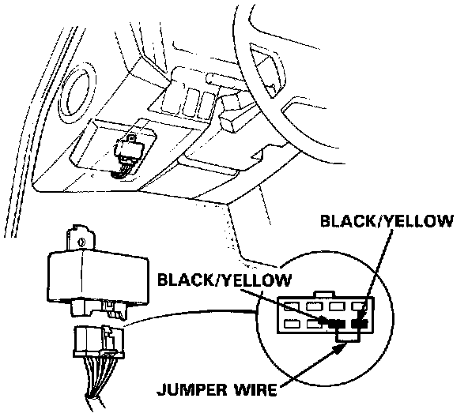
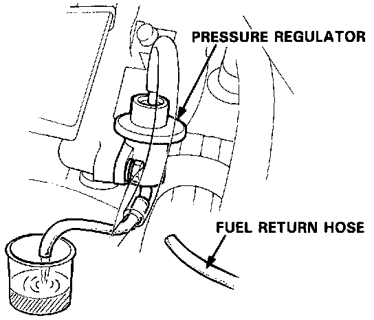
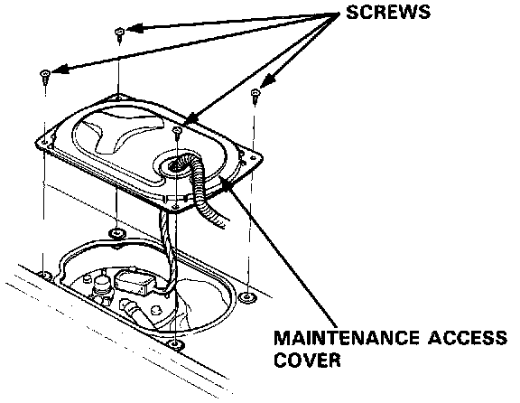
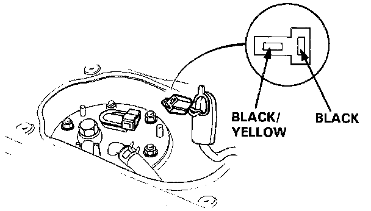

Sedan
Fuel Pump Output TestWARNING: Do not smoke during the test. Keep open flame away from your work area.
1. With the ignition switch OFF, disconnect the connector from the main relay behind the fuse box.

2. Connect the two Black/Yellow wires with a jumper wire.
3. Relieve fuel pressure, then tighten the service bolt.
4. Disconnect the fuel return hose from the regulator.

5. Turn the ignition switch ON for 10 seconds and measure the amount of fuel flow.
Amount should be:
230 cc (7.8 oz) min. in 10 seconds at 12V
- If fuel flow is less than 230 cc (7.8 oz), or there is no fuel flow, check for:
- Clogged fuel filter.
- Clogged fuel line.
- Pressure regulator failure.
Functional Test
If you suspect a problem with the fuel pump, check that the fuel pump actually runs; when it is ON, you will hear some noise if you hold the fuel filler port to your ear with the fuel filler cap removed. If the pump does not make noise, check as follows:

1. Remove the maintenance access cover in the luggage area.
2. Disconnect the connector.
CAUTION: Be sure to turn the ignition switch OFF before disconnecting the wires.

3. Check that battery voltage is available at the fuel pump connector when the ignition switch is turned ON (Positive probe to the Black/Yellow wire, negative probe to the Black wire).
- If battery voltage is available, replace the fuel pump.
- If there is no voltage, check the main relay and wire harness.